How to use the deep map
You do not need any special skills to use the map. This page shows each part of the screen with a picture and tells you what to press. Read it from top to bottom, or jump to the part you need.
Four steps to your first story
- 1
Open the map
Press Enter the 3D deep map on the home page.
- 2
Pick a state
Click a kalash pin or one of the raised, coloured states.
- 3
Open a water body
Click a round medallion to open its folio on the right.
- 4
Choose a fish
Each of the four fish tells one layer of memory. Click one to read it.
The screen at a glance
When the map opens you see a short title card. Then the globe turns and settles over India in 3D. The coloured, raised states are the eight states in the deep map so far: the taller and redder a state, the more water bodies it holds. The number on each kalash pin tells you how many.
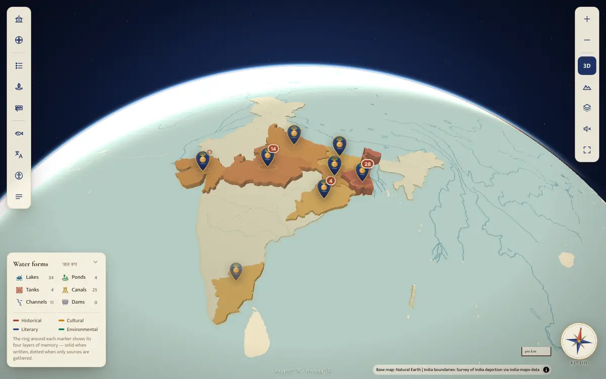
12345- Left toolbar. Moves you around the site: home, all of India, the list, the tour, the lexicon, help, language, accessibility and the site menu.
- Right toolbar. Controls the map: zoom, the 3D / 2D switch, relief, map style, sound and full screen.
- Kalash pins. One for each state in the deep map, with the number of its water bodies.
- Water forms. The legend, which also works as a filter.
- Compass. Shows which way is north and how far the map is tilted. Click it to face north again.
Left toolbar
- Project homeBack to the home page.
- All-India viewFly back out to the whole country.
- Water body listSearch and filter every water body.
- Guided tourA flight from one water body to the next.
- LexiconThe dictionary of water words, in a new tab.
- How to navigateA short help card.
- LanguageRead the site in an Indian language.
- Reading and accessibilityText size, dark mode and more.
- All pagesThe site menu.
Right toolbar
- Zoom inMove closer.
- Zoom outMove further away.
- 3D3D / 2DSwitch between the tilted 3D map and a flat 2D map.
- ReliefShow or hide hills and valleys (3D only).
- Map styleChoose Pothi, Akash or Raat, and set the relief.
- SoundOff when you arrive. Press to switch it on.
- Full screenFill the whole screen (on computers).
Drag, zoom, tilt and turn
Click and drag the map. On a touch screen, drag with one finger.
Use the scroll wheel, the and buttons, or pinch with two fingers.
In 3D, drag with the right mouse button, or hold Ctrl and drag. On a touch screen, slide or twist two fingers.
Click the compass to face north, or press to fly back to all of India.
A tilted globe or a flat map
The map always opens in 3D, tilted, with raised states and real hills and valleys. Press the 3D button on the right toolbar to flatten it into a 2D map with north at the top. The button then reads 2D. Press it again to go back to 3D. You can also choose the view at the top of the Map style panel. 2D is lighter to run, so it helps on older phones and slower computers.
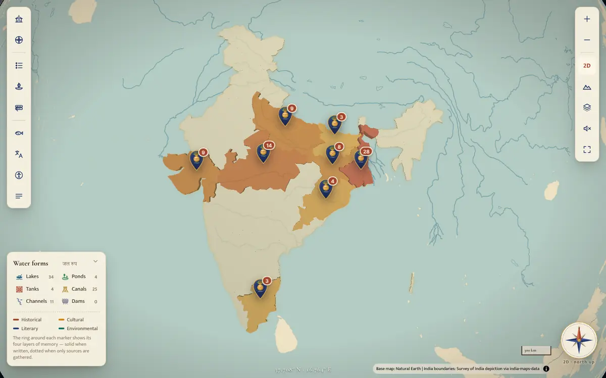
Visit a state
- Click a kalash pin, or click a raised state.
- The map flies into that state and fades the rest of India.
- A banner at the top shows the state's name in its own script, with a count of each water form.
- On a computer, the water body list opens on the left so you can see everything in that state.
- Press the arrow on the banner to return to all of India.
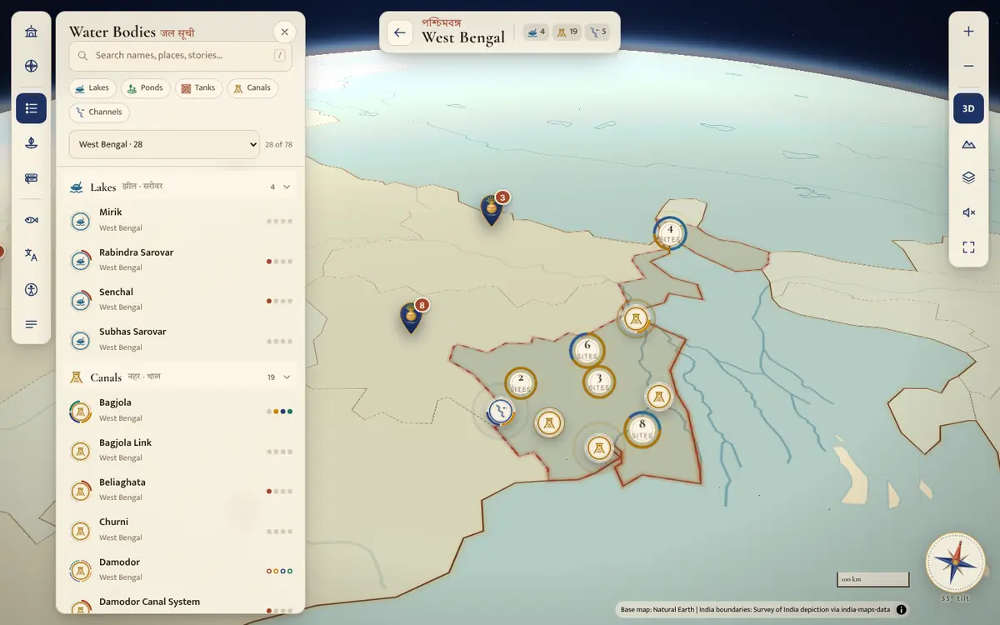
Medallions, rings and clusters
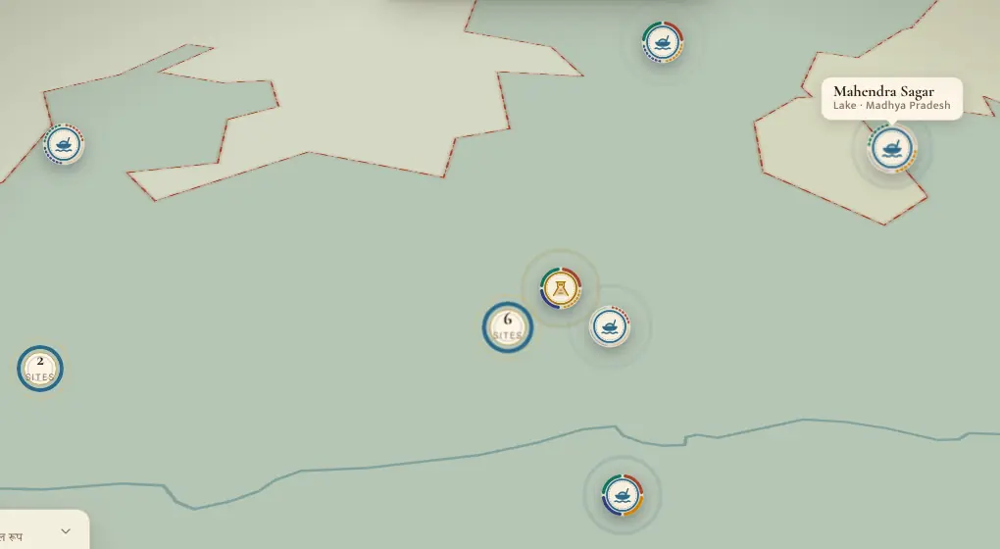
Each water body is a round medallion. The picture inside shows its water form: lake, pond, tank, canal or channel.
The ring shows the four layers. A solid part means that layer is written. A dotted part means sources are gathered but the text is still to come.
Water bodies that sit close together merge into a numbered circle. Click it, or zoom in, and it opens up.
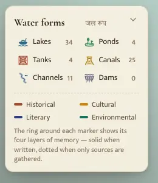
Click a water form in the legend, say Ponds, to show only ponds. Click it again to bring the rest back. The arrow at the top folds the legend away.
Open a water body
Click a medallion and its folio opens on the right. From top to bottom you will find:
- A photograph. Where we do not have one yet, you will see a drawing instead.
- The name, the water form, the state and the exact coordinates.
- A coloured bar showing how many of the four layers are written.
- The four fish. Click one to read its layer.
The bar at the bottom of the folio lets you move on:
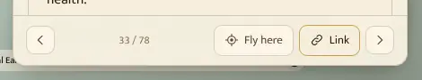
- ‹ and › go to the previous or next water body. The arrow keys do the same.
- Fly here brings the camera back to this water body.
- Link copies a web address that opens the map straight at this water body.
- × at the top closes the folio, and so does Esc.
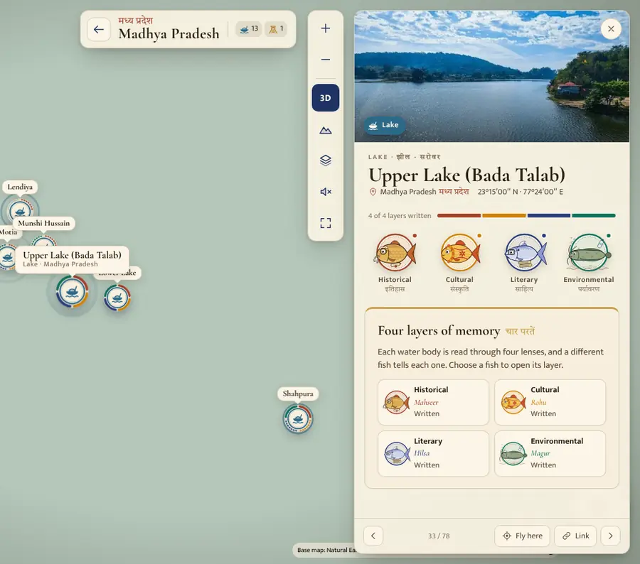
Let the fish tell the story
Each fish narrates one layer of memory. Click a fish, or press 1 to 4 on your keyboard.
- 1 · Historicaltold by the Mahseer: who built the water body, when, and what it saw.
- 2 · Culturaltold by the Rohu: rituals, festivals and everyday life by the water.
- 3 · Literarytold by the Hilsa: poems, novels, travel writing and local stories.
- 4 · Environmentaltold by the Magur: pollution, silt, encroachment and neglect.
The narrator sits at the top of each layer. Links in the text open the original sources in a new tab. If a layer is still being researched, the folio says so and lists the sources gathered so far.
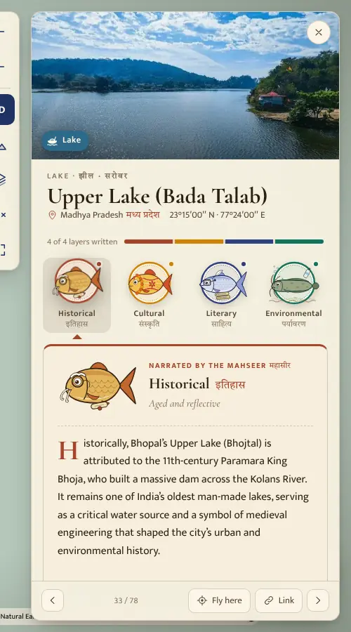
Find any water body
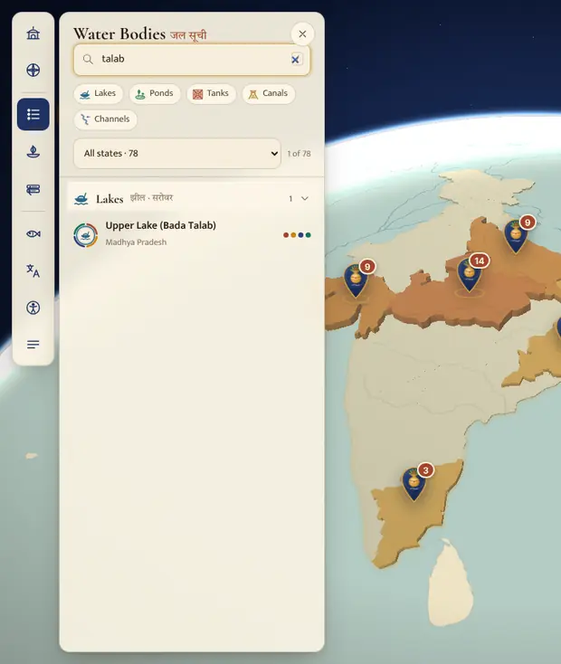
- Press on the left toolbar, or press / on your keyboard.
- Type any word: a name, a place, a state, or a word from the stories.
- Narrow the list with the water-form chips and the state menu underneath.
- The coloured dots on each row show which layers are written.
- Click a row to fly there and open its folio.
Prefer cards to a list? Jal Yatra shows every water body as a picture card, sorted by state, water form or layer.
Sit back and travel
Press on the left toolbar and the map flies from one water body to the next, state by state. A card at the bottom shows a photograph and a short extract.
- ‹ and › skip back or forward.
- Pause and play stop or restart the flight.
- Open folio pauses the tour so you can read the full entry.
- ■ ends the tour.
Dragging or zooming the map also pauses the tour. You can start it straight from a link: map.html?tour=1.
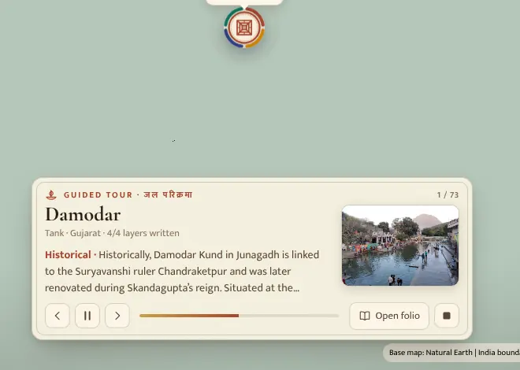
Change the look of the map
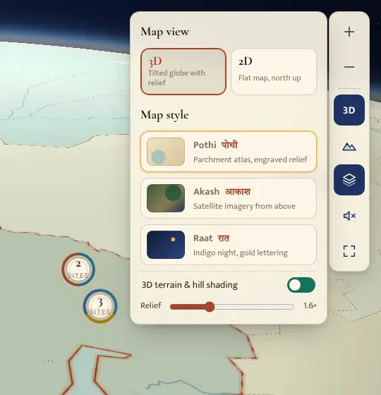
Press on the right toolbar. In this panel you can:
- choose the 3D or 2D view;
- pick one of three styles: Pothi, a parchment atlas (the default); Akash, satellite photographs; or Raat, indigo night with gold lettering;
- turn the 3D relief on or off, and use the slider to make the hills flatter or steeper.
The button on the toolbar is a shortcut for the relief switch. If you choose dark appearance in the accessibility panel, the map changes to Raat by itself.
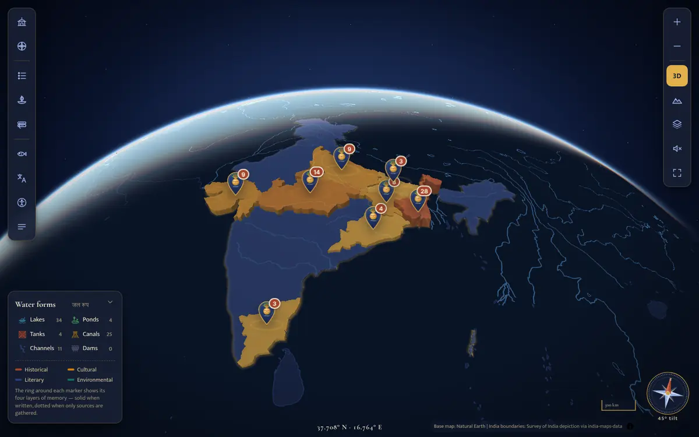
Sound is off until you want it
The site is silent when you arrive. Press the speaker button to switch the sound on. You will hear a quiet theme, and each water form has its own soundscape: a lake, pond, kund, canal or river scene that plays while its folio is open.
The music is made live in your browser, so nothing extra downloads. Press the button again whenever you want silence. Your choice lasts until you close the tab, and the next visit starts silent again.
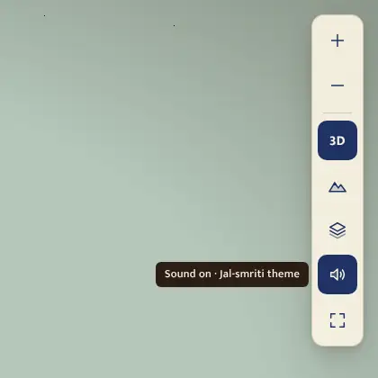
Read it your way
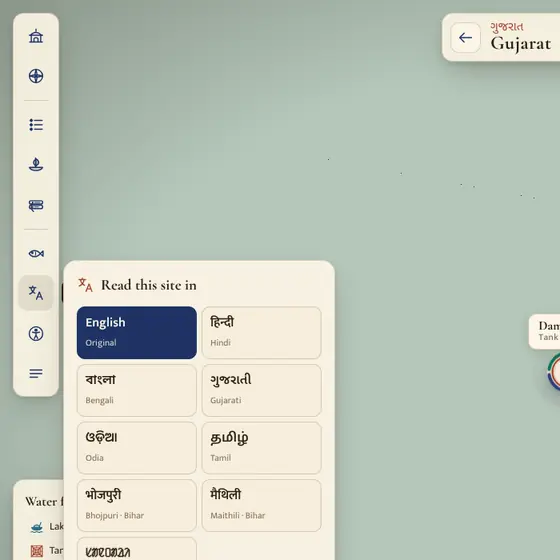
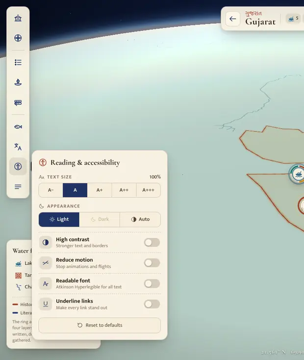
- Press to open the page in an Indian language through Google Translate. This works on the public website only.
- Press to change the text size, choose light, dark or automatic appearance, turn on high contrast, reduce motion, switch to a very readable font or underline every link. Your settings stay in your browser.
Keyboard shortcuts
Press on the left toolbar at any time for a short help card. If you like using the keyboard, these keys save time:
| / | Open the list and start searching |
| ← → | Previous or next water body |
| 1 to 4 | Open a layer in the folio |
| Esc | Close the open panel |
| Ctrl + drag | Tilt and turn the map (3D) |
| Tab | Move between buttons and markers |
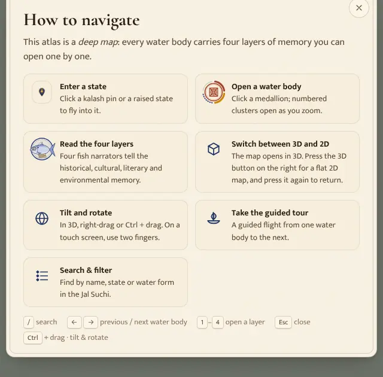
Using the map on a phone
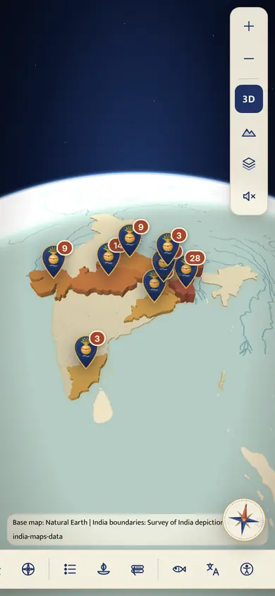
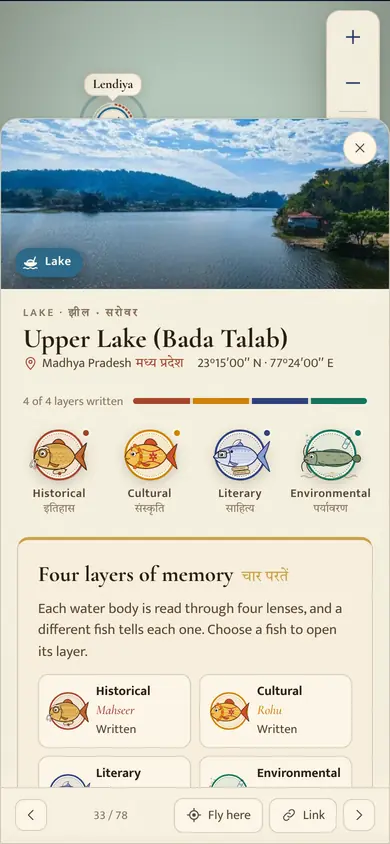
- The page toolbar sits along the bottom of the screen, and the map controls at the top right.
- The list and the folios slide up from the bottom. Press × to close them.
- Use one finger to move. Use two fingers to zoom, tilt and turn.
- If your phone feels slow, switch to 2D or turn the relief off.
If something goes wrong
The map is blank or grey
The 3D map needs WebGL, which almost every modern browser has. Update your browser, or turn on hardware acceleration in its settings. Chrome, Edge, Firefox and Safari all work.
The map feels slow
Switch to 2D, turn the relief off, or close a few other tabs.
I cannot hear anything
Sound starts off. Press the speaker button, then check your device volume and make sure the browser tab is not muted.
The translation does not work
Google can only translate the public website. It will not work on a copy of the site saved on your own computer.
An entry looks wrong, or I know a water body you have missed
We would like to hear from you. Please write to us through the contact page.